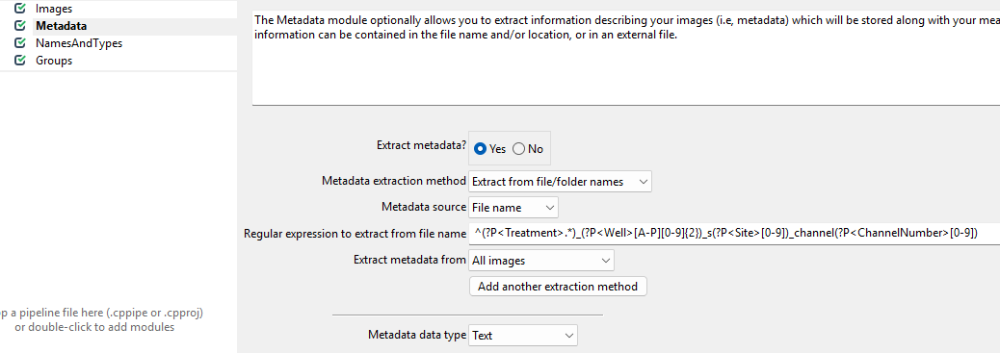
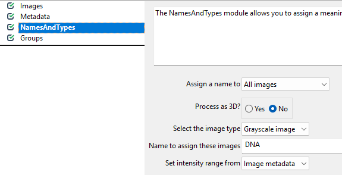
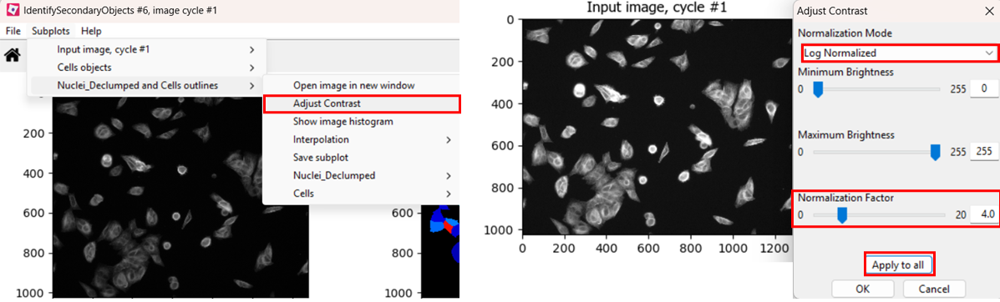
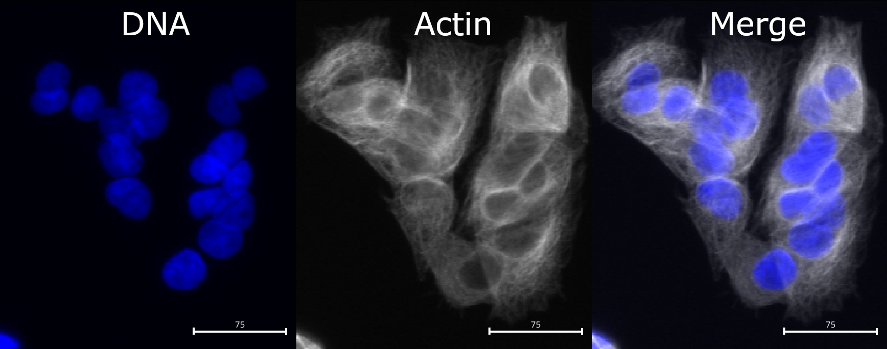
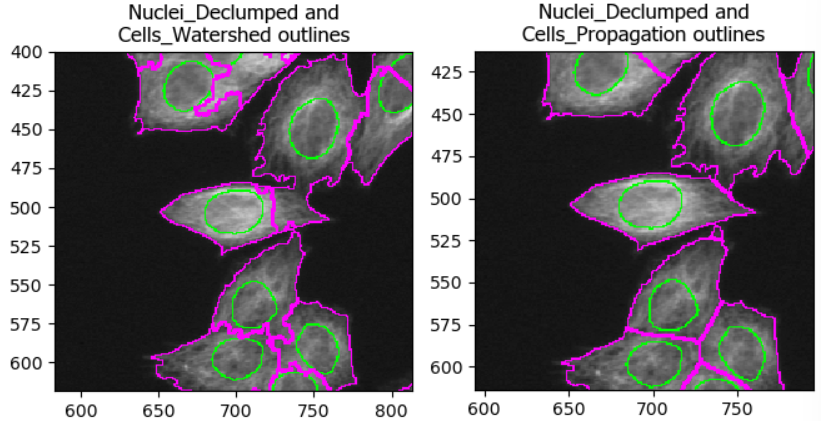
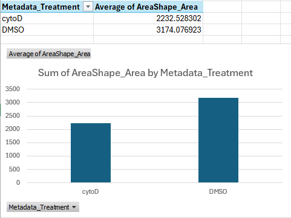
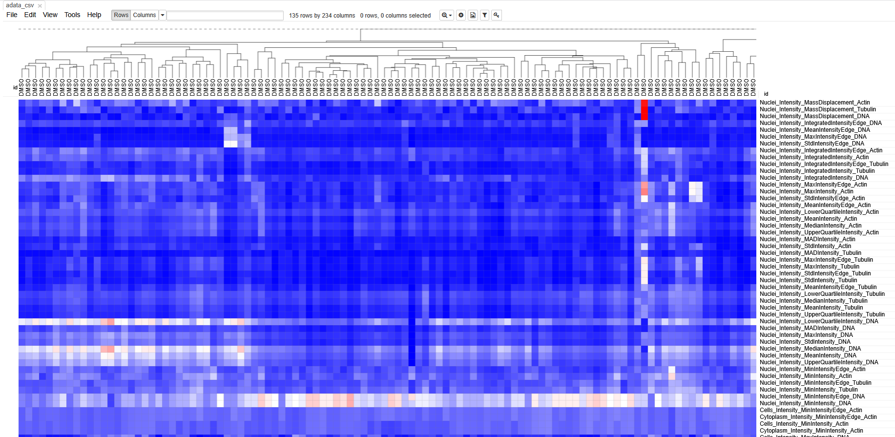

Content from Introduction to the BBBC021 dataset
Last updated on 2026-01-21 | Edit this page
Estimated time: 10 minutes
Overview
Questions
- What is the BBBC021 dataset?
Objectives
- Get an overview of the research question behind BBBC021.
- Understand the file structure.
The example dataset BBBC021
Welcome! For the next exercise we will use a compact, well-studied image set pulled from the Broad Bioimage Benchmark Collection (BBBC). The collection we are using is BBBC021, which contains images of MCF7 breast cancer cells treated with a panel of compounds. You can browse the full dataset here: https://bbbc.broadinstitute.org/BBBC021.
Why this dataset? Firstly, it is real experimental data used to discover which compounds change cell morphology and to cluster compounds by the pathways they perturb. Secondly, it is small and clean enough for hands-on learning, but biologically rich, so the analyses you build here translate to real research problems.
What did the experiment involve?
- Cells: MCF7 (human breast cancer cell line)
- Perturbations: 112 small molecules + DMSO control at multiple concentrations (we will use just two wells for the workshop)
- Stains (channels):
- DAPI: stains DNA / nuclei (channel1)
- Phalloidin: stains f‑actin (channel2)
- Anti‑β‑tubulin antibody: stains microtubules (channel3)
In this workshop, we will focus on comparing cells treated with DMSO to those treated with cytochalasin D (cytoD). It is a classic actin‑disrupting drug. When actin polymerization is disrupted you often see cells lose their spread morphology, change shape, and show altered phalloidin signal. That makes this a great case study for image‑based phenotyping.
Challenge
Given what you know about the dataset so far, can you formulate a research question? Try thinking about questions we may be able to answer using the images.
One option is: does cytochalasin D induce a morphological change in MCF7 cells?
But note that other questions may be interesting too! For example: does cytoD induce cell death?
Files and Metadata
Filenames contain the experimental metadata so you do not need a
separate spreadsheet. For example, the file name
cytoD_B07_s1_channel1.tif can be read as
- Treatment: cytoD
- Well: B07
- Site: s1 (image field within the well)
- Channel: channel1 (DAPI in this dataset)
Downloading sample data
If you have not yet done so, you will need to download the dataset now. Click on the button below and unzip the archive to a convenient location on your computer. Download dataset
Next steps
Ready to build the analysis pipeline? Proceed to the next section to open these images in CellProfiler and start measuring the features that will answer our question.
- BBBC021 is a high-content imaging dataset of MCF7 cells.
- File names contain information about treatments and experimental parameters.
Content from Reading images
Last updated on 2026-01-20 | Edit this page
Estimated time: 12 minutes
Overview
Questions
- How do we get started in CellProfiler?
- How do we teach CellProfiler the structure of our images?
Objectives
- Load images in CellProfiler.
- Understand modules for data loading.
Understanding preprocessing modules
There are four modules that CellProfiler always uses. In this episode, we will go through each and show what they are used for.
Images
Before we can get started with analyzing our images in CellProfiler, we need to load them in. Start CellProfiler and see whether you can figure out how!
Challenge: load the images into CellProfiler
Open CellProfiler and try loading the images into CellProfiler.
You can drag and drop the two folders, DMSO and
cytoD_0.1, onto the white field in CellProfiler.
Afterwards, it should look something like this: 
Now that CellProfiler knows where to find our images, we have to tell it a little bit about what is in the images.
Metadata
With the images loaded into CellProfiler, we can now start teaching CellProfiler what image belongs to which sample. For this, we use the Metadata module. This module’s purpose is to translate information that is captured in the file names into information that CellProfiler can understand.
Get started by click on ´yes´ for ´Extract metadata?´, upon which a menu should pop open. This is what it looks like by default: !(fig/metadata_default.png){Screenshot of the CellProfiler module “Metadata” with default settings}
Now, we wish to inform CellProfiler about which image contains what. To do so, set up the module as follows. 
While these regular expressions look complicated, they can be crafted more easily using tools like regex101.com. Unfortunately, they are also beyond the scope of our workshop, so feel free to just copy them from here:
The regular expression may be copied from here:
^(?P<Treatment>.*)_(?P<Well>[A-P][0-9]{2})_s(?P<Site>[0-9])_channel(?P<ChannelNumber>[0-9])
Challenge: What is happening here?
The images we are using have names like
cytoD_B07_s1_channel1.tif. We are trying to translate these
names into metadata with this awkward looking expression:
^(?P<Treatment>.*)_(?P<Well>[A-P][0-9]{2})_s(?P<Site>[0-9])_channel(?P<ChannelNumber>[0-9]).
This is an example of a regular expression. If you have not heard of regular expressions before, they represent a powerful way of pattern matching. Here, we use it to decode the file names.
You do not have to understand all the parts, but can you guess which part of the file name will match which part of the regular expression?
We can break up our file names by underscores. For example,
cytoD_B07_s1_channel1.tif can be read as
- Treatment:
cytoD - Well:
B07 - Site:
s1(site is the image number within a well) - Channel:
channel1
Using the regular expression, we can extract this information from each file name automatically, as long as it follows the same naming convention.
With this in hand, we can now translate the file names into metadata that CellProfiler can understand. To see this in action, press on the update button (top left in the below image), after which you can see the new columns to the right containing information about the imaging site, the week of the experiment, the imaged well, and treatment used.
NamesAndTypes
This module allows us to rename channel numbers to stain names. Recall from the dataset introduction that our stains are for DNA, actin, and tubulin, imaged in the first, second, and third channel. To make our lives easier when working with CellProfiler, we therefore wish to rename the channels to the corresponding stains. This helps us later when we pick the stain to detect cells from.
To do so, the NamedAndTypes modules tells CellProfiler
which channel belongs to which stain. Opening the module, we can see the
following defaults: 
Recall that in the Metadata module we extracted the channel number. We can now make use of this information to assign stain names to the images. To do so, we switch the “Assign a name” to “Images matching rules” (see below) and then assign the channels to names. You will have to click “Add another image” to add a new stain name, filling out the information as in the screenshot and then clicking “Update”.
Groups
You can leave this module untouched for now. It is intended to further group images by experimental units, such as batches, plates, etc. Here, we only have two sets of images and do not need the additional grouping.
Conclusions
To summarise, the preprocessing modules do not make any changes to the images, but instead translate file and folder names into structures CellProfiler can understand. As we will see in the next tutorial, this will be useful once we start working with the images in CellProfiler to do things like detecting cell boundaries and measure fluorescence intensity. If you have made it this far - well done! It can feel a bit overwhelming to get started with CellProfiler and to have it set up properly, but now that we have it in place we can finally launch into our analysis.
- Load images by dragging/dropping them onto CellProfiler’s Images module
- Translate your folder and file names into metadata Cellprofiler can interpret using modules.
Content from Identifying primary objects
Last updated on 2026-01-21 | Edit this page
Estimated time: 45 minutes
Overview
Questions
- How does CellProfiler identify objects in an image?
- Why do we usually start segmentation with nuclei?
- Which parameters matter most for good nucleus segmentation?
Objectives
- Understand what primary objects are in CellProfiler.
- Configure the IdentifyPrimaryObjects module to segment nuclei.
- Learn how to assess segmentation quality using the Test Mode viewer.
- Produce a nucleus object set suitable for downstream cell/feature analysis.
Introduction: why segment nuclei first?
In this episode, we will segment nuclei as our primary objects. In many microscopy assays, nuclei are an ideal starting point because they are:
- High contrast in a DNA channel (bright nuclei on a dark background), making them easier to separate from non-cell regions.
- Present in (almost) every cell, giving a reliable “anchor” object for counting cells and linking measurements.
- Typically compact and well-defined, which helps the segmentation algorithm succeed even when cell boundaries are faint.

Once nuclei are correctly identified, we can often use them to guide later steps like finding whole cells (secondary objects) or cytoplasm (tertiary objects), and to compute per-cell measurements.
In CellProfiler’s terminology: - Primary objects are detected directly from an image (here: nuclei from the DNA channel). - Secondary objects are grown out from primary objects (often whole cells). - Tertiary objects are derived from other objects (often cytoplasm = cell minus nucleus).
The IdentifyPrimaryObjects module
Add a new module via + Add → Object Processing → IdentifyPrimaryObjects.

You should now see a module where you need to specify: 1. which image to segment, 2. what to call the resulting objects, 3. how CellProfiler should separate touching nuclei, 4. what size and shape constraints to apply, 5. and (optionally) how to filter out artifacts.
Step 1: choose the correct input image
Set Select the input image to the DNA/nuclear stain
image (i.e. DNA, if you followed the steps in the previous episode).
Set Name the primary objects to be identified to
something descriptive like Nuclei.
Challenge: confirm you are using the correct channel
How can you quickly verify that you selected the DNA image (and not actin or tubulin)?
Using interactive test mode
One way to verify the image that is being segmented is to use
CellProfiler’s interactive test interface. To do this, first make sure
the eye symbol next to the module is enabled (dark). If it is a disabled
(light grey), click on the eye (step 1 in the figure below). Second,
start test mode and run the first step. A new CellProfiler window will
open, that shows the image that is being segmented next to the
segmentation results. Do the objects in the top left image look like
nuclei? You can zoom in using the magnifying glass (step 4 in figure).

Nuclei should show as compact, round, and high-contrast objects, as in the figure above. If you get a different result, make sure to double-check your settings for the segmentation and metadata modules.
Step 2: set an expected nucleus diameter (in pixels)
CellProfiler needs an approximate size range for objects. Set:
- Typical diameter of objects, in pixel units (Min, Max) to a range that matches your nuclei.
This is one of the most important parameters. If the minimum is too small, you may pick up noise; if the maximum is too small, large nuclei may be split.
Challenge: estimate nucleus size
Using a representative image, estimate a reasonable nucleus diameter range.
To estimate nuclei size range, it is good to measure the diameter of a few nuclei in a representative image. We can do so by using the measure tool in CellProfiler. From the test interface used in the previous challenge, we can access the measure tool (step 1 in figure). Then, by clicking and dragging the cursor (2), we can measure the length in pixels, which is displayed in the bottom right of the window (3). By repeating this process for a few nuclei, ideally across a few images, we can gain a good intuition for typical nuclei diameters.

Note: in bigger experiments, this should be repeated with different experimental conditions to make sure we are not biasing analyses.
Step 3: choose a thresholding strategy (foreground vs background)
CellProfiler separates nuclei (foreground) from background using a threshold. In the advanced settings of IdentifyPrimaryObjects, you have the choice of two threshold strategies:
- Global thresholding (one threshold per image)
- Adaptive thresholding (threshold varies across the image)
Set the thresholding method appropriate for your images. If illumination is uneven or background varies strongly, adaptive methods often perform better.
Challenge: compare thresholding options
Run the module in Test Mode on 2–3 images and compare at least two thresholding settings. Look out for things like
- Nuclei being merged or split (over- and undersegmentation)
- Background being included in foreground
Which setting best matches what you consider nuclei?
Note that CellProfiler colors nuclei it will remove in subsequent analyses in purple outlines. These nuclei are removed because they either do not fit the set diameter range, or because they are touching the border. Nuclei that will be kept are outlined in green.
In this dataset, as if often the case, it is difficult finding
perfect settings! Ideally, one spends a significant portion of time
optimizing the settings to make sure that results are biologically
representative of cells. In the figure below, you can see that changing
the segmentation strategy and method to “Adaptive” and “Otsu”,
respectively, may not make much of a difference. But results of the
segmentation with adaptive Otsu show that some pixels that are parts of
nuclei are discarded (top right). Note that the result will also be
affected by the settings we will change next. 
Step 4: declump touching nuclei
Nuclei often touch or overlap, particular if many cells were seeded. While a z-stack of images can help distinguish which nuclei goes where, due to the increased imaging time needed and more complex downstream analysis not all experiments involve z-stacks. Instead, we can instruct CellProfiler to separate clumped nuclei using information about nuclei shape and intensity.
While doing so, we need to make sure that one nucleus corresponds to one “object”.
Challenge: tune declumping
Find an image region with several touching nuclei. (In the sample data, the image of cells treated with cytoD has more clumped nuclei.) Adjust declumping parameters until most nuclei are separated correctly.
As before, it is not trivial to find ideal declumping settings. We can get satisfactory results using “Shape” for both, distinguishing clumped objects and to draw dividing lines here, but not that this will differ for each dataset and should be carefully tested.
This figure shows the impact of not using declumping at all (left) vs
declumping using “Shape” (right). 
Step 5 (optional): filter cells
Depending on your dataset, you may need to exclude: - tiny bright specks (dust/hot pixels), - very large blobs (out-of-focus regions), - edge artifacts.
Within IdentifyPrimaryObjects, you can often handle some of this using: - size constraints (min/max diameter), - smoothing of the image before thresholding, - discard objects touching the image border (if appropriate).
Placeholder: Decide whether learners should remove border-touching objects in your course and justify it (e.g. do partial nuclei matter for your analysis?).
Challenge: should we exclude border objects?
With your neighbor, discuss whether nuclei touching the image border should be kept or removed for your research question formulated in the previous section, e.g. “does cytochalasin D induce a morphological change in MCF7 cells?”
In most cases we advise removing cells touching the image border, because when we move to measuring cell characteristics they will represent outliers. For example, they may appear as disproportionately small cells because they were cut off. This does not represent biological changes but technical parameters, which we are not interested in during the analysis.
Conclusions
Segmentation is rarely perfect, but it should be fit for purpose. A good nucleus segmentation typically has:
- Most nuclei detected (few false negatives)
- Few background objects detected (few false positives)
- Reasonable splitting of touching nuclei
- Consistent performance across conditions (e.g. DMSO vs treatment)
Now that we have Nuclei objects, we can detect whole
cells, an important step towards measuring features per cell! Therefore,
in the next episode we will use the nuclei as anchors to find cell
boundaries.
Help
Did you get stuck with one of the steps? Download a working version of the pipeline here:
If you are using Firefox, you have to right click the button and select “Save Link As…”.
After downloading the pipeline, you can compare it to yours for
troubleshooting. To do so, first open a new CellProfiler window. Then,
import this pipeline in CellProfiler by clicking on File
> Import > Pipeline from File.
- Nuclei are often the best primary objects because they have high contrast and exist in nearly all cells.
- The most important parameters in IdentifyPrimaryObjects are object size, thresholding method, and declumping.
- Always test segmentation on multiple images and across experimental conditions.
Content from Identifying secondary & tertiary objects
Last updated on 2026-01-21 | Edit this page
Estimated time: 35 minutes
Overview
Questions
- How can we detect whole cells once we have identified nuclei?
- What is the differences between detecting primary, secondary, and tertiary objects?
Objectives
- Use IdentifySecondaryObjects to segment whole cells from an actin image.
- Understand how secondary objects depend on primary objects.
- Learn how propagation-based segmentation expands from nuclei to cell edges.
- Create a cell object set suitable for per-cell measurements.
- Use IdentifyTertiaryObjects to create cytoplasm masks.
From nuclei to whole cells
In the previous section, we identified nuclei as primary objects. This gives us “seed” objects: one nucleus per cell.
However, many biologically interesting measurements (e.g. cell area, shape and cytoplasmic fluorescence) require us to segment the whole cell. This is often more challenging than nuclei segmentation because:
- cytoplasm and boundaries can be fainter than nuclei,
- neighboring cells may touch or overlap,
- staining can be uneven across the cell body.
To tackle this, CellProfiler provides IdentifySecondaryObjects, which grows secondary objects outward from nuclei using information from another image (here an actin channel). This approach helps prevent ambiguous assignments of boundary pixels by ensuring each cell is linked to exactly one starting nucleus.
The IdentifySecondaryObjects module
Add a new module via + Add → Object Processing → IdentifySecondaryObjects.
You should now see a module where you need to specify:
- which primary objects act as “seeds” (nuclei),
- which image contains cell boundary information (actin),
- how to determine where each cell ends (thresholding + method),
- how to handle cells the image border.
Step 1: choose primary input objects
Set Select the input objects (or similarly named
setting) to Nuclei or the name you set in the previous
lesson. This tells CellProfiler that each cell object should be grown
outward from one nucleus.
Step 2: choose the correct input image (actin)
Set Select the input image to your actin (or
cytoplasmic) channel, e.g. Actin (or whatever name you
assigned in NamesAndTypes).
The channel should contain relatively strong signal across the cell body and/or along the cell boundary.
Challenge: confirm the actin image is suitable to find cell boundaries
Using Test Mode, inspect a few images:
- Can you see whole cell bodies?
- Are neighboring cells separable?
- Is the background reasonably dark?
If not, what issues do you observe?
If you find the contrast too dim to see the channel well, you can increase the contrast by selectig File > (Object name) outlines > Adjust Contrast, selecting normalized and a normalization factor in the range of 2-5, then click Apply to all. 
Compared to nuclei, cell boundaries are often less easily distinguished. We can see that the actin channel does increase at cell junctions, which should help in segmenting the cells in later steps. But it is important to keep in mind that any segmentation will not be perfect here: after all, where would you draw the boundaries by hand? 
Step 3: choose a method to identify secondary objects
Now we will use IdentifySecondaryObjects to segment
cells. Many of the options are the same as in
IdentifyPrimaryObjects, but the most important difference
is the presence of
Select the method to identify the secondary objects option.
We encourage you to read their descriptions in CellProfiler by clicking
the ? symbol, but most often it is set to
Propagation. To see why, let’s see what happens when we try
segmenting cells with either method!
Challenge (optional): explore methods
Try two different methods (e.g. propagation vs watershed gradient). How do the resulting cell boundaries differ?
As with the segmentation of nuclei, getting cell segmentation right can be tricky. Often, starting with “propagation” as method is a good starting point, because watershed can expand into neighboring cells (see below). But you can certainly find areas of the image where the reverse is true. This means that, once again, choices should be made carefully. 
Step 4: choose a threshold strategy and threshold method
Much like when segmenting nuclei, the
IdentifySecondaryObjects module allows us to fine-tune our
segmentation by changing the thresholding strategy and method. As
before, the best choice depends on illumination and staining
consistency. While Minimum Cross-Entropy (right) is the
default thresholding method, Propagation (left) often
yields less jagged cell boundaries:

Challenge: biological pitfalls
Think about the assumptions CellProfiler is making in its identification of secondary objects. Can you think of biological samples where these assumptions may not be met? Discuss with your neighbor.
CellProfiler identifies cells by expanding outwards from a nucleus. This assumes that each cell only has exactly one nucleus in the same plane. When imaging hepatocytes, for example, this can prove problematic: they often contain more than one nucleus. Equally, if we were imaging cells in suspension, we would have to make sure than we capture the nucleus accurately in 3D and expand the cell in 3D space too. And lastly, red blood cells do not even have a nucleus, so this method would not work for them either!
Other pitfalls include mitotic/meiotic cells: from when on do we term a splitting cell as two cells? When the two nuclei have budded off, or when the membrane is fully split? CellProfiler cannot answer these questions for us, instead, we must consider these biological complexities when designing our analysis pipeline to not yield nonsensical data down the line.
Once you are happy with the result, make sure to check the following options:
- Fill holes in identifies objects: Yes
- Discard secondary objects touching the border of the image: Yes
- Discard the associated primary objects: Yes
And finally, name the new primary objects thus filtered,
e.g. Nuclei_Filtered.
Identifying cytoplasm
You have now created whole-cell objects from nuclei seeds and an actin image. Well done! 🎉
With nuclei and cells in hand, we can create one last object: the cytoplasm. Fortunately, this one is easy:
Cytoplasm = Cell - Nucleus
To do this, add the IdentifyTertiaryObjects module and
select what you think are the correct options.
- Larger objects: cells identified with
IdentifySecondaryObjects - Smaller objects: nuclei filtered in
IdentifySecondaryObjects - Name: e.g.
Cytoplasm - Shrink smaller object prior to subtraction:
Yes(default)
Conclusions
Finally, we have created all masks we need and can move on to measure things!
Help
Did you get stuck with one of the steps? Download a working version of the pipeline here:
If you are using Firefox, you have to right click the button and select “Save Link As…”.
After downloading the pipeline, you can compare it to yours for
troubleshooting. To do so, first open a new CellProfiler window. Then,
import this pipeline in CellProfiler by clicking on File
> Import > Pipeline from File.
- Secondary objects (cells) are typically grown from primary objects (nuclei) using a cytoplasmic/cell-boundary stain (here: actin).
- Filtering border-touching nuclei helps avoid partial cells and misleading measurements.
- The most important settings in IdentifySecondaryObjects are the identification method and thresholding choices, which strongly affect whether cells merge or fragment.
- Tertiary objects (cytoplasm) are a subtraction of nuclei from the cell mask.
Content from Measuring object intensity and shape
Last updated on 2026-01-21 | Edit this page
Estimated time: 30 minutes
Overview
Questions
- Once we have segmentation masks, what can CellProfiler measure from them?
- What is the difference between intensity measurements and shape measurements?
Objectives
- Use MeasureObjectIntensity to quantify fluorescence per nucleus, cell, and cytoplasm.
- Use MeasureObjectSizeShape to quantify area/shape descriptors for each object.
Measuring: turning segmentations into numbers
So far, we have been creating masks: pixels belonging to nuclei, cells, and cytoplasm. Masks are useful on their own for quality control, but the real power of CellProfiler is that it can turn masks into quantitative measurements.
In this episode, we will measure two broad classes of features:
-
Intensity features: “how bright is this object in a
given channel?”
- Example questions:
- Is actin intensity higher in treated cells?
- Do nuclei become brighter/dimmer in the DNA channel?
- Example questions:
-
Size and shape features: “what is the geometry of
this object?”
- Example questions:
- Do cells spread out or shrink?
- Do nuclei become larger or more elongated?
- Example questions:
MeasureObjectIntensity: measuring fluorescence per object
Add the MeasureObjectIntensity to your pipeline.
This module measures per-object intensity statistics for one or more images. For example, it can quantify the DNA stain in the nucleus, or the actin stain intensity in the cytoplasm.
Challenge
What channel should be measured in what part of the cell? For example, should we quantify DNA signal only in the nucleus, or everywhere (nucleus, cytoplasm, whole cell)? Discuss with your neighbor.
The simplest setup is to measure all channels in all parts of the cells and decide which measurements to interpret down the line. Perhaps surprisingly, this is the approach frequently chosen in high-throughput experiments: measure everything, ask questions later. And indeed, one can envision scenarios where measuring e.g. DNA in the cytoplasm may prove useful if DNA leaks through the nuclear envelope due to environmental stress.
That said, if you have a narrow research question and an idea of where to look for changes in cell morphology, then only measuring the “correct” combination of channel and cell components will be the right approach.
To set this up in CellProfiler, for Select the objects to measure select:
Nuclei_FilteredCellsCytoplasm
Note: these names may differ, depending on what you called them in
previous modules. We will not use the nuclei created in
IdentifyPrimaryObjects, because we filtered them in
IdentifySecondaryObjects to only contain nuclei of cells
that are not touching the image boundary.
Then, select all channels in Select images to measure, unless you would like to only measure some of the channels. Finally, run the module in test mode and look at the output.
Challenge
Let’s see whether the DNA intensity is higher in the cytoplasm or the nucleus. Using the table that the module outputs in test mode, look for a row with “DNA - Cytoplasm - MeanIntensity” and read off the value in the “Mean” column. Then repeat this for “DNA - Nuclei_Filtered - MeanIntensity”. What do you observe?
Depending on your segmentation settings and which image you are using to test, the mean DNA intensity is about 3-4x higher in nuclei than in the cytoplasm, as you would expect.
MeasureObjectSizeShape: measuring geometry
Beyond fluorescence intensities, it is common to measure shape descriptors of cells. Example measurements include:
- area
- perimeter
- eccentricity / elongation
- compactness
Once again, we add the module (MeasureObjectSizeShape) and select our objects to measure in as before. For this workshop, disable Zernike and advanced features, as they slow down CellProfiler, which can be annoying while building the pipeline.
Step 3: QC shape measurements visually
Shape measurements are only as good as your segmentation. If cell boundaries are off, area and shape will be misleading.
Challenge: calculate the cytoplasm/nucleus ratio
Run the module in test mode and look for the Area feature for Cytoplasm and Nuclei_Filtered (or equivalent names in your pipeline). This feature describes the average number of pixels occupied by the cytoplasm/nucleus.
The cytoplasm occupies about 3-4x more space than the nucleus. Again, depending on your segmentation settings, your result may differ.
Exporting measurements
So far we have created segmentation masks and computed measurements (intensity and size/shape). To actually use these measurements outside CellProfiler (e.g. in R, Python, or Excel), we need to export them to files. The standard way to do this is the ExportToSpreadsheet module.
Add the ExportToSpreadsheet module. For this workshop, the default settings are fine. The most important thing is that:
- the module exports object-level measurements (for
Nuclei_Filtered,Cells, andCytoplasm), and - you know where the files are written to.
Challenge: export your measurements
- Add ExportToSpreadsheet at the end of your pipeline.
- Run the pipeline (not in test mode, but by clicking
Analyze images) - Find the exported files on disk.
Questions: - What file format(s) were produced
(e.g. .csv)? - Do you get separate files for
Nuclei_Filtered, Cells, and
Cytoplasm? - Open up one of the files. Can you identify at
least one column coming from intensity measurements and one coming from
shape measurements?
With default settings, CellProfiler typically exports one spreadsheet per object type (e.g. one for nuclei, one for cells, one for cytoplasm), plus one for image-level measurements if any were computed.
Open one of the exported spreadsheets and look for column names such as:
-
Intensity_MeanIntensity_*orIntensity_IntegratedIntensity_*(from MeasureObjectIntensity) -
AreaShape_Area/AreaShape_Perimeter/AreaShape_Eccentricity(from MeasureObjectSizeShape)
If you cannot find the files, check the Output file location setting in ExportToSpreadsheet and re-run the pipeline.
Tip: run on a subset first
When developing a pipeline, it’s often faster to run on a small subset of images first to confirm that exports look correct. Once you’re satisfied, run the pipeline on the full dataset.
Conclusions
We have now added measurement modules to compute:
- per-object fluorescence intensities (per nucleus, cell, cytoplasm)
- per-object morphology features (size and shape)
These features are the raw material for downstream analyses like comparing treated vs control populations, building morphological profiles, or training classifiers.
Help
Did you get stuck with one of the steps? Download a working version of the pipeline here:
If you are using Firefox, you have to right click the button and select “Save Link As…”.
After downloading the pipeline, you can compare it to yours for
troubleshooting. To do so, first open a new CellProfiler window. Then,
import this pipeline in CellProfiler by clicking on File
> Import > Pipeline from File.
- MeasureObjectIntensity quantifies fluorescence per object; choose objects and channels deliberately.
- MeasureObjectSizeShape quantifies morphology; disable Zernike/advanced features to iterate faster.
- Consistent object relationships matter: measure
Nuclei_Filteredto maintain clean 1-to-1 mapping with cells.
Content from Bonus: visualising features
Last updated on 2026-01-21 | Edit this page
Estimated time: 12 minutes
Overview
Questions
- How do you read CellProfiler’s exports?
- What information can be gleamed from them?
Objectives
- Create a simple figure in Excel
- Using Morpheus to investigate how cytoD affects cell morphology
Finished with the previous steps already? Well done! In this episode we will dive into the data that CellProfiler outputs and start to get a feel for the problems we may face in analyzing it.
To start with, find the folder with the .csv files
created in the previous episode. There should be 5-6 files in the folde,
prefixed by whatever we set in the settings of the export module.
-
Experiment.csvcontains basic information about the pipeline. -
Image.csvat its most basic just contains image indeces, although one can also export per-image features. - The remaining files are per-object, e.g.
Cells.csv. These represent features per single-cell and are perhaps the most interesting to analyse.
If you do not have an output file handy, you can download this one for the tutorial:
Open one of the files in Excel. Now we wish to check whether cytoD had any impact on cell morphology. Recall that cytoD is an actin inhibitor, so we may reasonably expect that cells will be smaller after treatment with cytoD.
Basic test of cell size in Excel
To test this, click on column “H” (Metadata_Treatment) to select it.
Then, while keeping the Ctrl key (Command ⌘ on Mac) pressed
, click on column “J” (AreaShape_Area). In the top, go to
Insert > Recommended charts and select the
top one (Clustered Column), then press Okay.
By default, this gives us a sum of pixels covered by cells in each
treatment. To change it to the more meaningful average (i.e. size of
cell on average per treatment), click on the graph, then in the bottom
right under Values click on the
Sum of AreaShape_Area, then
Value Field Settings. In the pop up window, select
Average and press Okay. What does the chart
show?
You should get a table and bar chart similar to this: 
If we do the math, this shows that cells treated with cytoD are about ~30 percent points smaller than cells treated with DMSO only, on average.
This is a great start, we can see that our treatment is indeed having a quantifiable effect! But how can we check this for all features, ideally in an automated way? And how can we skip the averaging that Excel is doing here entirely, and cluster single-cells?
Advanced analysis
Depending on your expertise with programming, you have a few options. If you
- would like to just see a quick result, skip to the next section
- have experience in Python programming, use pycytominer
- have no experience in Python yet but would like to learn, attend our future Python workshop!
- would like to analyse your results in depth, contact us!
Analysis with Morpheus
One useful tool to visualize CellProfiler outputs is Morpheus: https://software.broadinstitute.org/morpheus/ Morpheus is a matrix visualization tool that can quickly cluster rows and columns.
To see it in action, first download this sample input, which we created from a CellProfiler output:
Then open https://software.broadinstitute.org/morpheus/ and drop the file into Morpheus. You should now have a view like this:
 Each column represents measurements from a single cell. Each row represents a measurement. The boxes are color coded by the feature value for this cell (after some normalization). Cells (columns) are clustered based on similarity to each other.
Spend some time getting acquainted with the interface. Can you identify which cells belonged to which treatment? Do the cells cluster separately? Which features seem to have changed after treatment with cytoD?
Unfortunately, preparing an input file for Morpheus is not very straightforward, because it involves some normalization and, in bigger experiments, batch correction steps. It would also not be suitable for experiments with more than a few hundred cells, because you will quickly use sight of the large data.
Therefore, we recommend contacting DBI-INFRA if you would like to learn more:
- CellProfiler writes one
.csvper object type (i.e. Nuclei, Cells, Cytoplasm) - Exported files contain many columns with metadata
- Morpheus can be useful to interrogate morphological changes